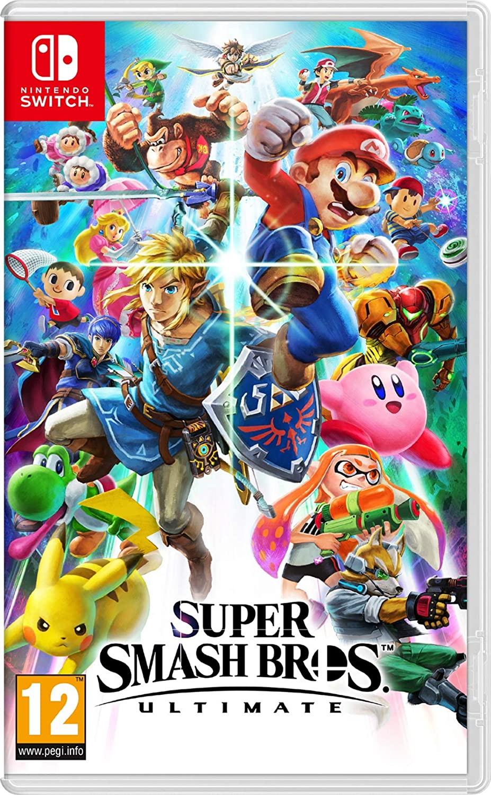

Super Smash Bros. est une licence de jeux vidéos de combat, développée en grande partie par HAL Laboratory (studio de développement affilié à Nintendo).
Cette série de jeux vidéos est reconnue comme étant le plus gros cross-over (réunion de personnages faisant parti d'univers différents) de l'histoire du jeu vidéo.
En effet, le dernier jeu de la série, Super Smash Bros. Ultimate, réuni environ 80 personnages ! Ça fait beaucoup !
La liste de combattants jouables n'a cessée d'augmenter depuis le premier opus sorti en 1999 sur la Nintendo 64. La série compte à l'heure actuelle 5 jeux, tous sorti sur des consoles Nintendo.
Ce qui différencie cette licence des autres jeux de combat est le système de combat non pas basé sur une barre de vie, mais sur des pourcentages.
Plus vous touchez votre adversaire, plus ses pourcentages augmentent, et plus il volera loin. Le but étant de l'éjecter du terrain.
Masahiro Sakurai (né le 3 août 1970 à Tokyo) est un concepteur de jeux vidéos japonais ayant intégré le studio HAL Laboratory en 1989.
Il est le créateur du personnage Kirby, l'une des figures emblématiques de Nintendo.
Il est aussi l'auteur d'une des licences les plus porteuses de la firme, celle des Super Smash Bros.
En août 2003, il décide de quitter son poste à HAL Laboratory.
Son départ est du à un manque de liberté. Il n'était pas content de la direction que prenait le studio.
Il travaille en collaboration Testsuya Mizugushi et le Studio Q pour sortir le jeu Meteos sur Nintendo DS.
En 2005, il crée son propre studio, nommé Sora. Avec celui-ci, il sort le troisième jeu de la série Super Smash Bros, sous le sous-titre de Brawl, le 31 Janvier 2008, sur la Nintendo WII.
Il sort aussi un jeu en mars 2012 sur Nintendo DS, s’appelant Kid Icarus : Uprising. Son projet Sora fut annulé en juin 2012.
Son studio sort les deux derniers Super Smash Bros en date (Super Smash Bros WiiU en 2014 et Super Smash Bros Ultimate en 2018 sur Nintendo Switch), toujours sous sa direction.
Sources : https://fr.wikipedia.org/wiki/Masahiro_Sakurai
https://www.mobygames.com/developer/sheet/bio/developerId,36619/
Super Smash Bros. 64 sur Nintendo 64, sorti le 19 novembre 1999
Super Smash Bros. Melee sur Nintendo GameCube, sorti le 24 mai 2002 
Super Smash Bros. Brawl sur Nintendo Wii, sorti le 27 juin 2008
Super Smash Bros. for WiiU / for 3DS sur Nintendo WiiU et 3DS, sorti le 3 octobre 2014 (3DS) et le 28 novembre 2014 (WiiU) 
Super Smash Bros. Ultimate sur Nintendo Switch, sorti le 7 décembre 2018 
Source : https://fr.wikipedia.org/wiki/Super_Smash_Bros.


Paul THIRION 

Florian STEC
© 2018 Nintendo
Jeu d'origine : © Nintendo / HAL Laboratory, Inc.
Personnages : © Nintendo / HAL Laboratory, Inc. / Pokémon. / Creatures Inc. / GAME FREAK inc. / SHIGESATO ITOI / APE inc. / INTELLIGENT SYSTEMS / Konami Digital Entertainment /
SEGA / CAPCOM CO., LTD. / BANDAI NAMCO Entertainment Inc. / MONOLITHSOFT / CAPCOM U.S.A., INC. / SQUARE ENIX CO., LTD. / ATLUS / Microsoft / SNK CORPORATION. /
Mojang AB